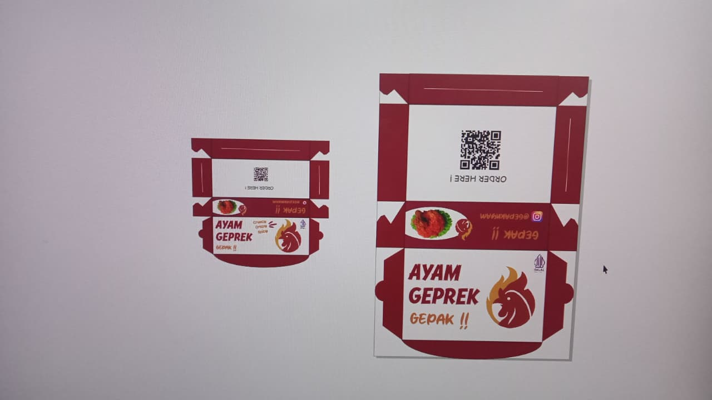
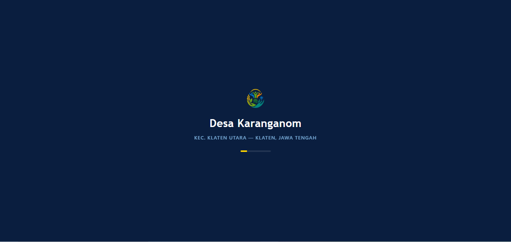
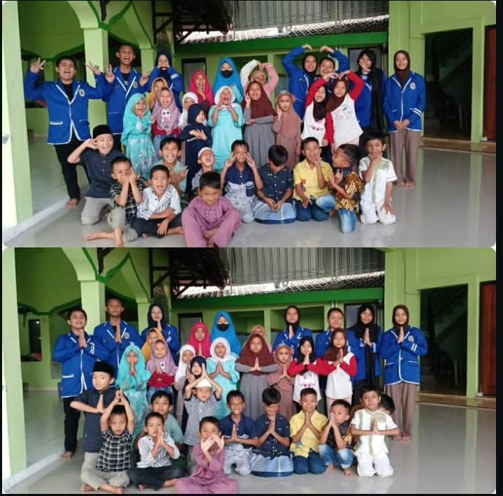
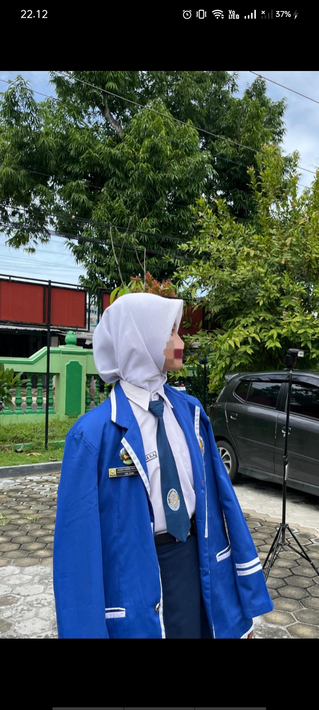
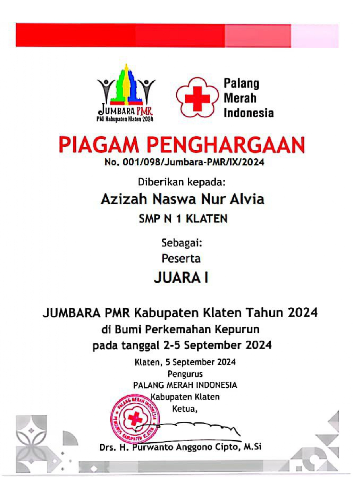
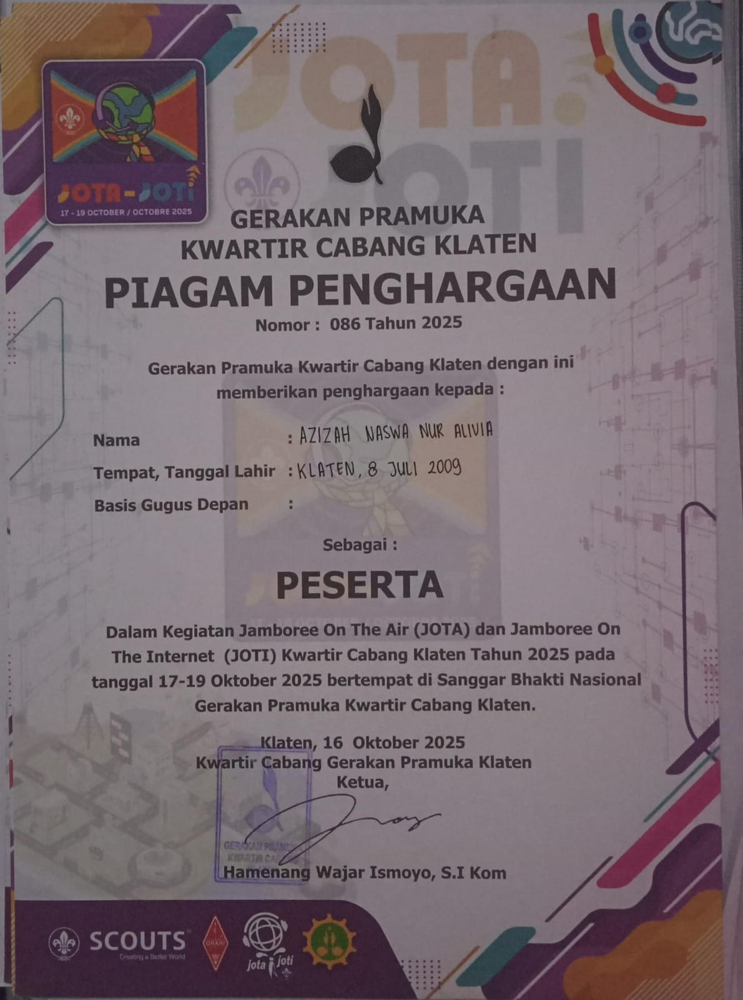

SD Negeri 1 Karanganom
Menempuh pendidikan dasar dan mulai membangun kemampuan akademik serta pengalaman belajar dalam lingkungan sekolah.
Portofolio 2026
Software Engineering Student | Technology Enthusiast | Organization & Community Volunteer
Saya adalah siswi Sekolah Menengah Kejuruan di bidang Software Engineering yang memiliki ketertarikan pada teknologi, khususnya Internet of Things (IoT), pengembangan website, dan desain digital.
Di luar bidang teknologi, saya aktif dalam organisasi dan kegiatan sosial yang membantu saya mengembangkan kemampuan komunikasi, kerja sama tim, kepemimpinan, dan manajemen kegiatan.
Let's explore my journey, experiences, and projects!
About Me
Saya Azizah Naswa Nur Alivia, siswi SMK di bidang Software Engineering yang tertarik mempelajari bagaimana teknologi dapat dikembangkan untuk membantu aktivitas dan kebutuhan manusia.
Ketertarikan saya tidak hanya berada di depan komputer. Saya senang berinteraksi dengan lingkungan dan masyarakat melalui berbagai organisasi, kepanitiaan, serta kegiatan sosial. Pengalaman tersebut membantu saya belajar memahami kebutuhan orang lain, bekerja dalam tim, berkomunikasi dengan berbagai pihak, dan bertanggung jawab terhadap tugas yang diberikan.
Bagi saya, teknologi dan kemampuan sosial dapat berjalan bersama. Karena itu, saya ingin terus mengembangkan kemampuan di bidang Software Engineering dan IoT, sekaligus mempertahankan kemampuan komunikasi dan kerja sama yang saya dapatkan melalui pengalaman organisasi.
Education
Perjalanan pendidikan menjadi bagian dari proses saya dalam mengembangkan kemampuan akademik, teknologi, organisasi, dan sosial.
Menempuh pendidikan dasar dan mulai membangun kemampuan akademik serta pengalaman belajar dalam lingkungan sekolah.
Mengembangkan kemampuan akademik sekaligus aktif mengikuti kegiatan organisasi sekolah. Pada masa ini, saya mendapatkan pengalaman dalam bekerja sama, berkomunikasi, dan menjalankan tanggung jawab dalam organisasi.
Menempuh pendidikan kejuruan di bidang Software Engineering. Saya mempelajari pengembangan perangkat lunak melalui berbagai pembelajaran dan project, seperti web development, graphic design, database, dan Internet of Things (IoT).
Organization Experience
Bagi saya, organisasi bukan hanya tentang mengikuti kegiatan. Organisasi menjadi tempat untuk belajar bertanggung jawab, bekerja bersama orang lain, menyelesaikan permasalahan, dan berkomunikasi dengan berbagai pihak.
Menjalankan tanggung jawab dalam bidang administrasi organisasi dengan mengelola dan mengarsipkan surat masuk maupun surat keluar. Saya juga terlibat dalam berbagai kepanitiaan, membantu koordinasi kegiatan, serta menyusun jadwal petugas untuk kegiatan rutin sekolah.
Administration · Communication · Teamwork · Time Management · Event Coordination
Bertanggung jawab dalam pengelolaan administrasi organisasi, termasuk pembuatan dan pengarsipan surat masuk maupun keluar. Saya juga terlibat dalam kepanitiaan berbagai kegiatan serta membantu mengatur jadwal pertemuan dan koordinasi dengan pihak terkait.
Kedisiplinan · Tanggung Jawab · Koordinasi · Kerja Sama Tim
Berpartisipasi sebagai kader Pimpinan Ranting Nasyiatul Aisyiyah (PRNA) dalam kegiatan yang berhubungan dengan lingkungan masyarakat. Saya ikut mengamati kebutuhan dan kondisi masyarakat sekitar serta berpartisipasi dalam kegiatan yang bertujuan menyediakan ruang kebersamaan dan kegiatan positif bagi masyarakat.
Social Communication · Community Engagement · Teamwork · Social Awareness
Berpartisipasi dalam berbagai kegiatan sosial dan kemasyarakatan di lingkungan sekitar. Melalui Karang Taruna, saya memperoleh pengalaman bekerja sama dengan masyarakat dan berkontribusi dalam pelaksanaan kegiatan lingkungan.
Experience
Selain kegiatan akademik, saya aktif mengikuti organisasi dan kepanitiaan sebagai ruang untuk mengembangkan kemampuan yang tidak hanya diperoleh melalui pembelajaran di kelas.
Menangani kebutuhan administrasi kegiatan, membantu penyusunan dokumen, pencatatan informasi, serta memastikan dokumen kegiatan tersusun dengan baik.
Membantu mengoordinasikan anggota dan kebutuhan kegiatan agar setiap bagian dapat menjalankan tugas sesuai dengan perencanaan.
Memandu jalannya kegiatan dan membantu menjaga komunikasi antara penyelenggara dengan peserta selama acara berlangsung.
Berpartisipasi dalam menyusun konsep dan rangkaian acara serta membantu memastikan kegiatan berjalan sesuai susunan yang telah direncanakan.
Saya juga memiliki pengalaman mengikuti berbagai kegiatan dalam bidang teknologi, kepramukaan, Paskibra, kegiatan sosial, serta perkemahan bersama PMR tingkat kabupaten.
Skills & Expertise
Kemampuan saya berkembang melalui pembelajaran di sekolah, project, organisasi, dan pengalaman kegiatan.
Kemampuan dasar membangun website menggunakan HTML, CSS, dan JavaScript, mulai dari menyusun struktur halaman hingga membuat tampilan website yang responsif dan interaktif.
Pengalaman membuat project IoT sederhana dengan mengintegrasikan sensor, mikrokontroler, dan komponen elektronika untuk menjalankan fungsi tertentu.
Mampu membuat desain visual untuk kebutuhan pembelajaran maupun kegiatan dengan memperhatikan layout, warna, tipografi, dan penyampaian informasi.
Kemampuan dasar dalam mengolah dan menyusun konten visual agar informasi dapat disampaikan dengan lebih menarik.
Terbiasa bekerja dalam tim melalui berbagai project, organisasi, dan kepanitiaan serta mampu menyesuaikan diri dengan pembagian tugas dan tanggung jawab.
Pengalaman berkomunikasi dengan anggota organisasi, panitia, peserta kegiatan, dan masyarakat melalui berbagai kegiatan sekolah maupun lingkungan.
Previous Projects
Project saya tidak hanya berasal dari bidang teknologi. Saya juga mengembangkan pengalaman melalui kegiatan sosial, fundraising, dan kepanitiaan. Setiap pengalaman memberikan kesempatan untuk menerapkan kemampuan teknis maupun kemampuan bekerja dengan orang lain.

01Ruang Dokumentasi Hasil DesainMengembangkan berbagai karya desain grafis sebagai bagian dari project pembelajaran dengan menerapkan prinsip dasar layout, typography, color composition, dan visual hierarchy. Dalam prosesnya, saya belajar mengubah informasi menjadi komunikasi visual yang lebih terstruktur dan mudah dipahami. Project ini membantu meningkatkan kemampuan saya dalam visual communication, creativity, dan attention to detail.
Dokumentasi

02Ruang Dokumentasi Hasil WebMerancang dan mengembangkan website statis menggunakan HTML, CSS, dan JavaScript sebagai bagian dari pembelajaran Software Engineering. Saya terlibat mulai dari penyusunan struktur halaman, perancangan tampilan, pengaturan navigasi hingga penambahan interaksi sederhana. Melalui project ini, saya mengembangkan kemampuan front-end development, UI implementation, problem solving, dan debugging.
Technology: HTML · CSS · JavaScript
Dokumentasi

03Ruang Dokumentasi Bakti SosialBerpartisipasi dalam kegiatan bakti sosial sebagai bentuk kepedulian dan kontribusi kepada masyarakat. Saya bekerja bersama tim dalam membantu persiapan, koordinasi, dan pelaksanaan kegiatan agar bantuan dapat disalurkan sesuai dengan tujuan kegiatan. Melalui kegiatan ini, saya memperoleh pengalaman berinteraksi langsung dengan masyarakat.
Dokumentasi

05Ruang Dokumentasi Event CommitteeBerpartisipasi sebagai panitia dalam kegiatan dengan bekerja bersama tim untuk membantu persiapan dan pelaksanaan kegiatan. Saya membantu koordinasi kebutuhan kegiatan agar acara berjalan terstruktur, serta belajar bekerja dalam lingkungan yang melibatkan banyak pihak dan membutuhkan komunikasi yang baik.
Dokumentasi
Certificates & Achievements
Setiap kegiatan dan pencapaian menjadi bagian dari proses saya dalam menambah pengalaman, memperluas wawasan, dan mengembangkan kemampuan.

Ruang Foto SertifikatSertifikat partisipasi dalam kegiatan PMR sebagai bagian dari pengalaman kegiatan sosial dan pengembangan diri.

Ruang Foto SertifikatSertifikat partisipasi dalam Jamboree on the Air – Jamboree on the Internet (JOTA-JOTI) sebagai pengalaman mengikuti kegiatan kepramukaan yang memanfaatkan komunikasi dan teknologi.
Contact
Saya terbuka untuk berbagi pengalaman, berkolaborasi dalam project, serta mempelajari hal-hal baru khususnya dalam bidang technology, IoT, design, organization, dan community activities. Jika Anda tertarik untuk berdiskusi atau berkolaborasi, silakan menghubungi saya melalui kontak berikut.
Saya percaya bahwa setiap project dan pengalaman merupakan kesempatan untuk belajar, berkembang, dan memberikan kontribusi yang lebih baik.
Thank you for visiting my portfolio.
Let's connect, collaborate, and grow together.